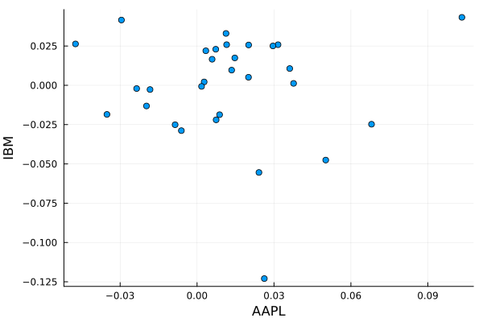

Basic demo of TSFrames using financial data
Create a TSFrame object for IBM historical data
To load the IBM historical data, we will use the MarketData.yahoo function from MarketData.jl, which returns the data in the form of a TimeArray. We just simply pass this on to the TSFrame constructor.
julia> using TSFrames, MarketData, Plots, Statistics, ImputeERROR: ArgumentError: Package Impute not found in current path. - Run `import Pkg; Pkg.add("Impute")` to install the Impute package.julia> ibm_ts = TSFrame(MarketData.yahoo(:IBM))13229×6 TSFrame with Date Index Index Open High Low Close AdjClose Volume ⋯ Date Float64 Float64 Float64 Float64 Float64 Float64 ⋯ ──────────────────────────────────────────────────────────────────────────────── 1971-02-08 16.0851 16.336 15.8939 16.2882 3.70613 719648.0 ⋯ 1971-02-09 16.2882 16.3121 16.1687 16.1807 3.68166 673624.0 1971-02-10 16.1568 16.1568 15.9775 16.1209 3.66806 648520.0 1971-02-11 16.1209 16.2285 16.097 16.1926 3.68438 579484.0 1971-02-12 16.1926 16.2285 16.1329 16.2285 3.69253 382836.0 ⋯ 1971-02-16 16.2285 16.4197 16.1926 16.3301 3.71565 684084.0 1971-02-17 16.2703 16.2703 16.0492 16.0851 3.6599 652704.0 1971-02-18 16.0851 16.1209 15.7385 15.7385 3.58105 822156.0 ⋮ ⋮ ⋮ ⋮ ⋮ ⋮ ⋮ ⋱ 2023-07-14 133.91 133.92 132.94 133.4 133.4 2.8607e6 ⋯ 2023-07-17 133.26 134.61 133.1 134.24 134.24 3.1674e6 2023-07-18 134.71 135.95 134.29 135.36 135.36 3.8521e6 2023-07-19 135.53 136.45 135.19 135.48 135.48 5.52e6 2023-07-20 137.19 140.32 136.56 138.38 138.38 1.08963e7 ⋯ 2023-07-21 138.21 139.78 137.76 138.94 138.94 5.8586e6 2023-07-24 139.35 140.12 138.78 139.54 139.54 3.4752e6 13214 rows omitted
Create TSFrame object for AAPL
Similarly, we can create a TSFrame object for the AAPL data.
julia> aapl_ts = TSFrame(MarketData.yahoo(:AAPL))10742×6 TSFrame with Date Index Index Open High Low Close AdjClose Volum ⋯ Date Float64 Float64 Float64 Float64 Float64 Float ⋯ ──────────────────────────────────────────────────────────────────────────────── 1980-12-12 0.128348 0.128906 0.128348 0.128348 0.099584 4.690 ⋯ 1980-12-15 0.12221 0.12221 0.121652 0.121652 0.094388 1.758 1980-12-16 0.113281 0.113281 0.112723 0.112723 0.087461 1.057 1980-12-17 0.115513 0.116071 0.115513 0.115513 0.089625 8.644 1980-12-18 0.118862 0.11942 0.118862 0.118862 0.092224 7.344 ⋯ 1980-12-19 0.126116 0.126674 0.126116 0.126116 0.097852 4.863 1980-12-22 0.132254 0.132813 0.132254 0.132254 0.102614 3.736 1980-12-23 0.137835 0.138393 0.137835 0.137835 0.106945 4.695 ⋮ ⋮ ⋮ ⋮ ⋮ ⋮ ⋮ ⋱ 2023-07-14 190.23 191.18 189.63 190.69 190.69 4.157 ⋯ 2023-07-17 191.9 194.32 191.81 193.99 193.99 5.052 2023-07-18 193.35 194.33 192.42 193.73 193.73 4.835 2023-07-19 193.1 198.23 192.65 195.1 195.1 8.050 2023-07-20 195.09 196.47 192.5 193.13 193.13 5.958 ⋯ 2023-07-21 194.1 194.97 191.23 191.94 191.94 7.191 2023-07-24 193.41 194.91 192.25 192.75 192.75 4.537 1 column and 10727 rows omitted
Create a 6-month subset of stock data
We would like to compare the stock returns for both the stocks for 6 months starting from June 1, 2021 till December 31, 2021. We use TSFrames.subset method to create new objects which contain the specified duration of data.
julia> date_from = Date(2021, 06, 01);julia> date_to = Date(2021, 12, 31);julia> ibm = TSFrames.subset(ibm_ts, date_from, date_to)150×6 TSFrame with Date Index Index Open High Low Close AdjClose Volume Date Float64 Float64 Float64 Float64 Float64 Float64 ───────────────────────────────────────────────────────────────────── 2021-06-01 138.623 139.417 137.428 137.849 124.873 2.5287e6 2021-06-02 138.26 139.34 137.772 139.312 126.198 2.9151e6 2021-06-03 138.537 139.465 137.706 139.149 126.051 4.32061e6 2021-06-04 139.579 141.061 139.35 140.937 127.671 3.26132e6 2021-06-07 141.061 142.199 140.698 141.511 128.19 3.62198e6 2021-06-08 141.606 143.595 141.606 142.514 129.1 5.31378e6 2021-06-09 142.476 144.426 142.275 144.044 130.485 5.54725e6 2021-06-10 144.809 146.119 143.174 143.92 130.373 4.97739e6 ⋮ ⋮ ⋮ ⋮ ⋮ ⋮ ⋮ 2021-12-22 129.06 129.79 127.6 129.75 120.476 3.9232e6 2021-12-23 130.0 130.96 129.52 130.63 121.293 3.649e6 2021-12-27 130.63 131.65 129.95 131.62 122.213 4.2939e6 2021-12-28 131.6 133.22 131.59 132.63 123.151 3.4452e6 2021-12-29 132.4 134.21 132.3 133.35 123.819 4.2399e6 2021-12-30 133.75 134.37 133.33 133.91 124.339 3.1581e6 2021-12-31 134.0 134.99 133.61 133.66 124.107 3.3621e6 135 rows omitted
julia> aapl = TSFrames.subset(aapl_ts, date_from, date_to)150×6 TSFrame with Date Index Index Open High Low Close AdjClose Volume Date Float64 Float64 Float64 Float64 Float64 Float64 ───────────────────────────────────────────────────────────────────── 2021-06-01 125.08 125.35 123.94 124.28 122.84 6.76371e7 2021-06-02 124.28 125.24 124.05 125.06 123.611 5.92789e7 2021-06-03 124.68 124.85 123.13 123.54 122.109 7.62292e7 2021-06-04 124.07 126.16 123.85 125.89 124.432 7.51693e7 2021-06-07 126.17 126.32 124.83 125.9 124.442 7.10576e7 2021-06-08 126.6 128.46 126.21 126.74 125.272 7.44038e7 2021-06-09 127.21 127.75 126.52 127.13 125.657 5.68779e7 2021-06-10 127.02 128.19 125.94 126.11 124.649 7.11864e7 ⋮ ⋮ ⋮ ⋮ ⋮ ⋮ ⋮ 2021-12-22 173.04 175.86 172.15 175.64 174.119 9.21353e7 2021-12-23 175.85 176.85 175.27 176.28 174.754 6.83566e7 2021-12-27 177.09 180.42 177.07 180.33 178.769 7.49196e7 2021-12-28 180.16 181.33 178.53 179.29 177.738 7.91443e7 2021-12-29 179.33 180.63 178.14 179.38 177.827 6.23489e7 2021-12-30 179.47 180.57 178.09 178.2 176.657 5.9773e7 2021-12-31 178.09 179.23 177.26 177.57 176.033 6.40623e7 135 rows omitted
Combine adjusted closing prices of both stocks into one object
We now join (cbind) both the stocks' data into a single object for further analysis. We use TSFrames.join to create two columns containing adjusted closing prices of both the stocks. The join happens by comparing the Index values (dates) of the two objects. The resulting object contains two columns with exactly the same dates for which both the objects have data, all the other rows are omitted from the result.
julia> ibm_aapl = TSFrames.join(ibm[:, ["AdjClose"]], aapl[:, ["AdjClose"]]; jointype=:JoinBoth)150×2 TSFrame with Date Index Index AdjClose AdjClose_1 Date Float64 Float64 ────────────────────────────────── 2021-06-01 124.873 122.84 2021-06-02 126.198 123.611 2021-06-03 126.051 122.109 2021-06-04 127.671 124.432 2021-06-07 128.19 124.442 2021-06-08 129.1 125.272 2021-06-09 130.485 125.657 2021-06-10 130.373 124.649 ⋮ ⋮ ⋮ 2021-12-22 120.476 174.119 2021-12-23 121.293 174.754 2021-12-27 122.213 178.769 2021-12-28 123.151 177.738 2021-12-29 123.819 177.827 2021-12-30 124.339 176.657 2021-12-31 124.107 176.033 135 rows omittedjulia> TSFrames.rename!(ibm_aapl, [:IBM, :AAPL])150×2 TSFrame with Date Index Index IBM AAPL Date Float64 Float64 ────────────────────────────── 2021-06-01 124.873 122.84 2021-06-02 126.198 123.611 2021-06-03 126.051 122.109 2021-06-04 127.671 124.432 2021-06-07 128.19 124.442 2021-06-08 129.1 125.272 2021-06-09 130.485 125.657 2021-06-10 130.373 124.649 ⋮ ⋮ ⋮ 2021-12-22 120.476 174.119 2021-12-23 121.293 174.754 2021-12-27 122.213 178.769 2021-12-28 123.151 177.738 2021-12-29 123.819 177.827 2021-12-30 124.339 176.657 2021-12-31 124.107 176.033 135 rows omitted
After the join operation the column names are modified because we merged two same-named columns (AdjClose) so we use TSFrames.rename!() method to rename the columns to easily remembered stock names.
Fill missing values
julia> ibm_aapl = ibm_aapl |> Impute.locf()ERROR: UndefVarError: `Impute` not defined
Convert data into weekly frequency using last values
Here, we convert daily stock data into weekly frequency by taking the value with which the trading closed on the last day of the week as the week's price.
julia> ibm_aapl_weekly = to_weekly(ibm_aapl)31×2 TSFrame with Date Index Index IBM AAPL Date Float64 Float64 ────────────────────────────── 2021-06-04 127.671 124.432 2021-06-11 131.013 125.875 2021-06-18 123.947 128.949 2021-06-25 127.168 131.568 2021-07-02 121.262 138.339 2021-07-09 122.561 143.429 2021-07-16 120.292 144.694 2021-07-23 122.405 146.839 ⋮ ⋮ ⋮ 2021-11-19 107.756 159.16 2021-11-26 107.533 155.452 2021-12-03 110.346 160.439 2021-12-10 115.221 177.896 2021-12-17 118.294 169.658 2021-12-23 121.293 174.754 2021-12-31 124.107 176.033 16 rows omitted
Compute weekly returns using the familiar log and diff functions
julia> ibm_aapl_weekly_returns = diff(log.(ibm_aapl_weekly))31×2 TSFrame with Date Index Index IBM_log AAPL_log Date Float64? Float64? ──────────────────────────────────────────────── 2021-06-04 missing missing 2021-06-11 0.0258467 0.0115307 2021-06-18 -0.055449 0.0241276 2021-06-25 0.0256601 0.020109 2021-07-02 -0.0475581 0.0501808 2021-07-09 0.0106558 0.0361354 2021-07-16 -0.0186869 0.00878217 2021-07-23 0.0174141 0.0147148 ⋮ ⋮ ⋮ 2021-11-19 -0.0247661 0.0680367 2021-11-26 -0.00207043 -0.0235706 2021-12-03 0.0258273 0.0315733 2021-12-10 0.043229 0.103288 2021-12-17 0.0263248 -0.0474146 2021-12-23 0.0250372 0.0295917 2021-12-31 0.0229302 0.0072913 16 rows omittedjulia> TSFrames.rename!(ibm_aapl_weekly_returns, [:IBM, :AAPL])31×2 TSFrame with Date Index Index IBM AAPL Date Float64? Float64? ──────────────────────────────────────────────── 2021-06-04 missing missing 2021-06-11 0.0258467 0.0115307 2021-06-18 -0.055449 0.0241276 2021-06-25 0.0256601 0.020109 2021-07-02 -0.0475581 0.0501808 2021-07-09 0.0106558 0.0361354 2021-07-16 -0.0186869 0.00878217 2021-07-23 0.0174141 0.0147148 ⋮ ⋮ ⋮ 2021-11-19 -0.0247661 0.0680367 2021-11-26 -0.00207043 -0.0235706 2021-12-03 0.0258273 0.0315733 2021-12-10 0.043229 0.103288 2021-12-17 0.0263248 -0.0474146 2021-12-23 0.0250372 0.0295917 2021-12-31 0.0229302 0.0072913 16 rows omitted
Compute standard deviation of weekly returns
Computing standard deviation is done using the std function from Statistics package. The skipmissing is used to skip missing values which may have been generated while computing log returns or were already present in the data.
julia> ibm_std = std(skipmissing(ibm_aapl_weekly_returns[:, :IBM]))0.034079271127382904
julia> aapl_std = std(skipmissing(ibm_aapl_weekly_returns[:, :AAPL]))0.030582264556527402
Scatter plot of AAPL and IBM
Here, we use the Plots package to create a scatter plot with IBM weekly returns on the x-axis and Apple weekly returns on the y-axis.
plot(ibm_aapl_weekly_returns[:, :AAPL],
ibm_aapl_weekly_returns[:, :IBM],
seriestype = :scatter;
xlabel = "AAPL",
ylabel = "IBM",
legend = false)
Aggregation and rolling window operations
Here, we compute realised volatility of returns of both IBM and Apple stock weekly and bi-monthly. Then, we compute daily returns volatility on a rolling basis with a window size of 10.
julia> daily_returns = diff(log.(ibm_aapl))150×2 TSFrame with Date Index Index IBM_log AAPL_log Date Float64? Float64? ────────────────────────────────────────────────── 2021-06-01 missing missing 2021-06-02 0.0105551 0.0062566 2021-06-03 -0.00116748 -0.0122287 2021-06-04 0.0127662 0.0188436 2021-06-07 0.00406171 7.9462e-5 2021-06-08 0.00706857 0.00664979 2021-06-09 0.010676 0.00307244 2021-06-10 -0.000863267 -0.00805566 ⋮ ⋮ ⋮ 2021-12-22 0.00602977 0.0152028 2021-12-23 0.00675954 0.0036372 2021-12-27 0.0075499 0.0227148 2021-12-28 0.00764438 -0.00578387 2021-12-29 0.00541402 0.000501838 2021-12-30 0.00419055 -0.00660003 2021-12-31 -0.00186862 -0.00354142 135 rows omittedjulia> rvol = apply(daily_returns, Week(1), std) # Compute the realised volatility31×2 TSFrame with Date Index Index IBM_log_std AAPL_log_std Date Float64? Float64? ──────────────────────────────────────────────── 2021-06-01 missing missing 2021-06-07 0.00423144 0.00685033 2021-06-14 0.00515154 0.0140529 2021-06-21 0.0135566 0.00849506 2021-06-28 0.022242 0.00681117 2021-07-06 0.00774684 0.0123477 2021-07-12 0.00554715 0.0145983 2021-07-19 0.00913886 0.0201179 ⋮ ⋮ ⋮ 2021-11-15 0.00421516 0.0107342 2021-11-22 0.00524033 0.0175358 2021-11-29 0.0142162 0.0188585 2021-12-06 0.00430296 0.0142467 2021-12-13 0.0139501 0.0249444 2021-12-20 0.00719005 0.0122394 2021-12-27 0.00389367 0.0121977 16 rows omittedjulia> rvol = apply(daily_returns, Month(2), std) # Every two months4×2 TSFrame with Date Index Index IBM_log_std AAPL_log_std Date Float64? Float64? ─────────────────────────────────────────────── 2021-06-01 missing missing 2021-08-02 0.00863798 0.0124996 2021-10-01 0.0187055 0.0131257 2021-12-01 0.00792971 0.0184033julia> rollapply(daily_returns, std, 10) # Compute rolling vols141×2 TSFrame with Date Index Index rolling_IBM_log_std rolling_AAPL_log_std Date Float64? Float64? ─────────────────────────────────────────────────────── 2021-06-14 missing missing 2021-06-15 0.00703765 0.0116 2021-06-16 0.00777315 0.011578 2021-06-17 0.00939339 0.0103008 2021-06-18 0.00965328 0.0105066 2021-06-21 0.0128877 0.0109084 2021-06-22 0.0125776 0.0111714 2021-06-23 0.0121089 0.0114156 ⋮ ⋮ ⋮ 2021-12-22 0.0102034 0.0220221 2021-12-23 0.0102076 0.0220115 2021-12-27 0.0102131 0.0213968 2021-12-28 0.00798217 0.0202205 2021-12-29 0.00799228 0.0199266 2021-12-30 0.00678746 0.0179653 2021-12-31 0.00534792 0.0116642 126 rows omitted
Rolling regression with a window of 10
One of the common finance problems is to run a rolling window regression of firm returns over market returns. For doing this, we will use the lm() function from the GLM package. We will create a separate function regress() which would take in the data as an argument and use pre-defined strings to identify the returns columns, pass them to lm(), and return the results.
We start by downloading the S&P500 daily data from Yahoo Finance, then performing the same steps as above to come to a joined TSFrame object containing daily returns of S&P500 and IBM stock prices. Then, use rollapply() with bycolumn=false to tell rollapply() to pass in the entire TSFrame to the function in one go for each iteration within the window.
julia> sp500 = TSFrame(MarketData.yahoo("^GSPC"));julia> sp500_adjclose = TSFrames.subset(sp500, date_from, date_to)[:, ["AdjClose"]]150×1 TSFrame with Date Index Index AdjClose Date Float64 ────────────────────── 2021-06-01 4202.04 2021-06-02 4208.12 2021-06-03 4192.85 2021-06-04 4229.89 2021-06-07 4226.52 2021-06-08 4227.26 2021-06-09 4219.55 2021-06-10 4239.18 ⋮ ⋮ 2021-12-22 4696.56 2021-12-23 4725.79 2021-12-27 4791.19 2021-12-28 4786.35 2021-12-29 4793.06 2021-12-30 4778.73 2021-12-31 4766.18 135 rows omittedjulia> sp500_ibm = join(sp500_adjclose, ibm_adjclose, jointype=:JoinBoth)ERROR: UndefVarError: `ibm_adjclose` not definedjulia> sp500_ibm_returns = diff(log.(sp500_ibm))ERROR: UndefVarError: `sp500_ibm` not definedjulia> TSFrames.rename!(sp500_ibm_returns, ["SP500", "IBM"]);ERROR: UndefVarError: `sp500_ibm_returns` not definedjulia> function regress(data) ll = lm(@formula(IBM ~ SP500), data) co::Real = coef(ll)[coefnames(ll) .== "IBM"][1] sd::Real = Statistics.std(residuals(ll)) return (co, sd) endERROR: LoadError: UndefVarError: `@formula` not defined in expression starting at REPL[6]:2julia> rollapply(sp500_ibm_returns, regress, 10, bycolumn=false)ERROR: UndefVarError: `sp500_ibm_returns` not defined